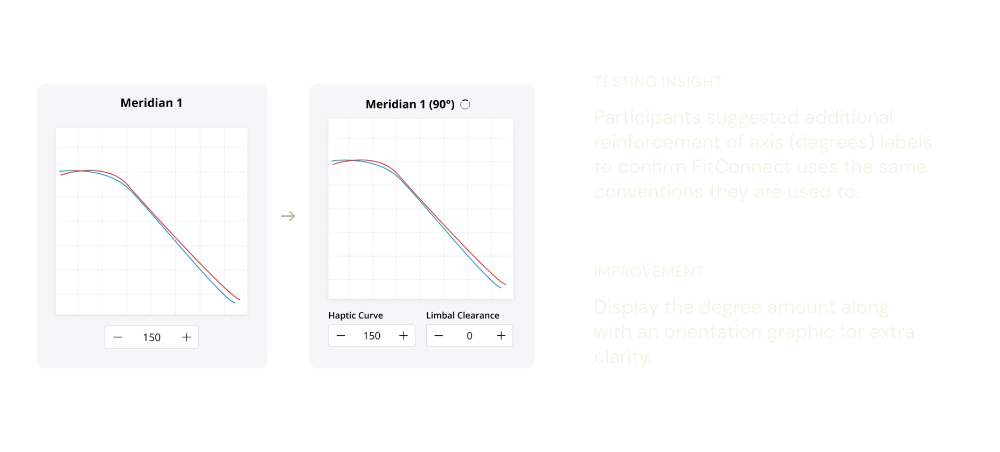
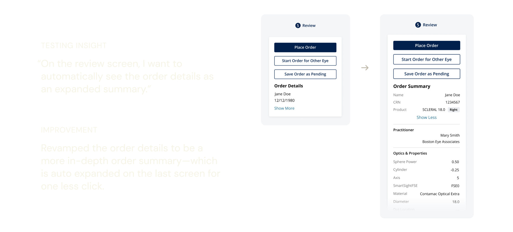
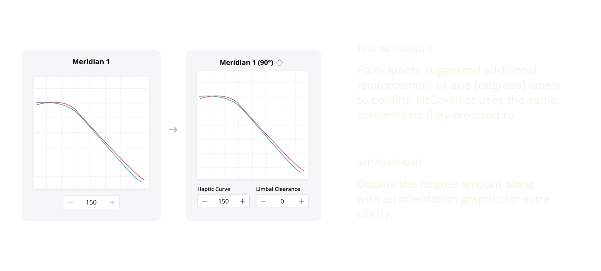
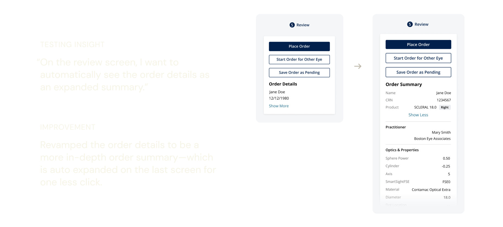

Making contact-lens ordering more visionary
Customizing contact lenses is no easy feat for eye doctors. We used common patterns akin to online shopping to streamline their process and diminish their need for software training.
Client Project
•
UX/UI Design
•
Healthcare


 


